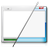
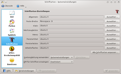

KDE-Aussehen
Dieser Artikel wurde für die folgenden Ubuntu-Versionen getestet:
Ubuntu 14.04 Trusty Tahr

Das Design von KDE kann sehr flexibel dem eigenen Geschmack angepasst werden. In diesem Artikel wird beschrieben wie Farbschema, Symbole, Schriften und Fensterstilen geändert werden können. Auf KDE-Look.org  werden für alle Kategorien zahlreiche Designs zur Verfügung gestellt, welche meistens direkt aus den entsprechenden Konfigurationsdialogen geladen werden können.
werden für alle Kategorien zahlreiche Designs zur Verfügung gestellt, welche meistens direkt aus den entsprechenden Konfigurationsdialogen geladen werden können.
Hinweis:
Alle hier vorgestellten Design Aspekte betreffen nur das Aussehen der Anwendungen. Die Anpassung des Designs der KDE-Arbeitsfläche Plasma ist im Artikel KDE-Arbeitsfläche beschrieben.
Das komplette Aussehen der KDE-Anwendungen kann unter "Erscheinungsbild von Anwendungen" der KDE Systemeinstellungen ("K-Menü -> Rechner -> Systemeinstellungen") konfiguriert werden.
| Designeinstellungen | ||
| Symbol | Beschreibung | Screenshot |
| Stil der Bedienelemente auswählen. Bedienelemente (engl. Widgets) sind die Bausteine, aus denen Anwendungen zusammengesetzt sind. Das obere Listenfeld "Stil der Bedienelemente" enthält eine Liste der installierten Stile. Um den Stil auszuwählen, klickt man einfach auf den gewünschten Stilnamen. Im unteren Bereich wird dann eine Vorschau der wichtigsten Bedienelemente angezeigt. | ||
| "Stil" | ||
| Farben für die Bedienelemente festlegen. Über die Reiter können weitere Einstellung zum gewählten Farbschema vorgenommen werden. Über die Schaltfläche "Neue Farbschemata herunterladen" können komplette Farbschemata direkt von KDE-Look heruntergeladen werden. | ||
| "Farben" | ||
| Globales Symboldesign aller Anwendungen auswählen. Neue Designs lassen sich einfach über die Schaltfläche "Neue Designs herunterladen" direkt von KDE-Look.org herunterladen. | ||
| "Symbole" | ||
 | Schrift und deren Größe für verschiedene verwendete Schriften in den Anwendungsbereichen festlegen. Zusätzlich können in diesem Modul Einstellungen zur Kantenglättung und zu Punktdichte (DPI) vorgenommen werden. Die Installation zusätzlicher Schriftarten ist im Artikel Schriften beschrieben. |  |
| "Schriftarten" | ||
| Siehe: GTK+ Anwendungen unter KDE | ||
| "GTK+-Erscheinungsbild" | ||
 | Designs von Emoticons verwalten. Typische Zeichenfolgen wie :-) werden in verschiedenen KDE Anwendungen, wie KMail, Kopete oder Konqueror durch ein Bild ersetzen. Im linken Bereich wird eine Liste aller verfügbaren Designs angezeigt und im rechten Bereich werden alle Emoticons des ausgewählten Design zusammen mit der Zeichenfolge, welche durch das jeweilige Emoticon ersetzt wird, angezeigt. Über die Schaltflächen "Hinzufügen" und "Bearbeiten" können neue Zeichenfolgen definiert werden und bestehende ergänzt werden. Weitere Designs lassen sich ganz einfach über die Schaltfläche "Neue Symbol-Designs holen" direkt von KDE-Look.org herunterladen. | |
| "Emoticons" | ||

- Erstellt mit Inyoka
-
 2004 – 2017 ubuntuusers.de • Einige Rechte vorbehalten
2004 – 2017 ubuntuusers.de • Einige Rechte vorbehalten
Lizenz • Kontakt • Datenschutz • Impressum • Serverstatus -
Serverhousing gespendet von